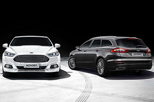

當生活型態改變，休閒在人們生活中的比重愈來愈高，扮演更重要角色的同時。我們對車的期待與想像，也不再只是交通工具，不再只是單純的移動，而是期盼它們可以滿足我們更多的需求。像是更多元的機能、更能夠適應各種地型的穿越能力、更多的個性、更靈活的駕馭感受，甚至，更輕巧、節能，又有效率。
輕休旅，跨界正紅
而且，由於家庭人口結構的改變，小家庭，或者頂客族所佔的比例也日漸提高，人們的用車型態也隨之變化，不再需要體型龐大的中大型或者大型車輛。再加上休閒風氣的盛行，房車隨之退燒，消費者開始將目光轉向尺碼更小，機能更多元的跨界休旅車款之上。這也造成當今市場上最火熱，而且新品最多的，幾乎集中在小型跨界休旅這個級距。
Ford早已洞悉這個市場的潛力，在2003年時就已推出首代EcoSport，當時便使用較為粗獷的小型SUV設定，瞄準年輕族群追求多元、靈活、機能與個性的需求。隨著小型休旅市場在全球的發燒，2012年發表的第2代EcoSport變成Ford全球戰略佈局中的一環，足跡遍布歐洲與北美等市場，以更具時尚感的外觀設計，化身切入小型休旅市場的重要角色，並在日前再度改款更新，進一步強調年輕都會氣息與細膩質感。
優越視野，輕巧靈活
雖然全新改款的EcoSport取消外掛備胎的設計，讓EcoSport更為緊緻俐落。但是，與一般小型休旅級距車款多半往捨棄休旅本格，追求偏向掀背或者跑車的造型設計不同，EcoSport的外觀設計，仍然堅持住跨界休旅車款最核心的SUV本色。尤其是高達209mm的底盤離地高度，更是讓EcoSport有更強悍的地形穿越能力，更重要的，是賦予EcoSport高人一等的駕駛視野，創造超乎小型休旅的格局，讓靈巧的EcoSport，可以更自在穿梭在擁擠的都會。
但是，全新改款的EcoSport透過新世代Ford休旅家族外觀設計的導入，包括動感型拱引擎蓋、新式樣盾型水箱護罩，加上重新設計的魚眼式投射燈組、LED晝行燈，讓EcoSport不僅視覺感受更具張力，也更富時尚氣息。同時，新一代的內裝設計思維，運用軟質皮紋前面板、歐風皮質包覆排檔頭，搭配點綴細節的鍍鉻裝飾，更進一步凸顯EcoSport的細膩質感。
不僅如此，全新改款的EcoSport還換上了重新設計的座椅，搭配高質感的柔韌皮革，給予更寬闊、舒適的乘座感受。再加上能夠透過前翻、收摺的後排座椅，帶來的最高1,178公升行李廂容積，還有全車高達25處的收納空間巧思。雖然EcoSport的體型小巧，卻展現了強大的貼心機能設計。
3缸綠能高效動力植入，科技滿點
配合著全新的時尚外表，EcoSport在改款更新的同時，也全面調整動力編成，以綠能高效為核心思維，全面汰換過去的1.5升直列4缸引擎，改用排氣量同樣為1.5升，但改為3缸設計的1.5L Ti-VCT自然進氣雙可變汽門正時引擎，以及1.0升直列3缸缸內直噴渦輪增壓設計的EcoBoost 125引擎作為動力編成。EcoBoost 125引擎雖然排氣量只有999c.c.，但是卻整合缸內直噴、渦輪增壓與雙可變汽門正時等技術，可以爆發出125匹的最大馬力，並且於1,500rpm時就能湧現17.33公斤米的最高扭力，完美詮釋油耗、性能與環保之間的平衡，也連續6年獲得國際引擎大賞1.0升以下最佳引擎的肯定。如今，加入EcoSport動力編成，也為EcoSport貼上綠能高效的徽章。
即使是入門等級的1.5L Ti-VCT引擎也承襲了這樣的思維，將目前被視為最有效率，也最能兼顧運轉品質的每汽缸500c.c.設計融入1.5L Ti-VCT引擎的設計理念中。此具全新引擎由Ford位於英國的工程團隊操刀，採用直列3缸設計，並且導入鋁合金氣缸體，同步縮小引擎體積與重量，同時降低摩擦力，提升引擎的運轉效率。雖然採用自然進氣設定，配合著雙可變汽門正時系統，依然能夠繳出123匹的最大馬力。同時透過缸徑與衝程比優化，拉升低轉速域扭力輸出表現，於1,500轉時即可輸出近90%扭力，是兼顧耐用度、性能與油耗的最佳入門選擇。
再搭配EcoBoost 125車型標配的SYNC 3娛樂通訊整合系統，除了能夠以懸浮式設計的8吋彩色觸控式螢幕直覺操控，還整合了Apple CarPlay、Android Auto智慧型手機連結，讓車主能夠無縫接軌智慧移動生活，並且具備聲控功能，只需簡單的語音指令，就可控制音響與行動通訊等，讓使用車輛更得心應手、直覺便利。
安全核心，便利溫馨
儘管EcoSport擔任的是Ford休旅家族入門車款的角色，但Ford最核心的安全，同樣沒有妥協。包括A柱、B柱都採用超高強度硼鋼打造，建構堅固的車室籠型結構，確保人員乘座的空間是最堅不可摧的堡壘。搭配全車系雙前座正面、雙前座側面、左右車側氣簾等6具氣囊，且旗艦型還增加駕駛座膝部氣囊，在強硬的車室空間之中，運用高達7具傲視同級氣囊數量。還有將開關整合在駕駛座側中控鎖的電子式兒童安全鎖，遠較一般車款的機械式後座安全鎖先進，駕駛於行車期間也可按下此按鍵，安心確保後座上鎖。此外也配備讓安裝兒童安全座椅更便利的ISOFIX兒童安全座椅固定座等，溫柔守護車內的每一位乘客。
還不僅於此，EcoSport最高提供前4、後4駐車雷達，搭配上倒車顯影，還有光感應自動啟閉頭燈、雨滴感應式自動雨刷，甚至是同級距車款罕見的自動防眩車內後視鏡等。不只是安全不妥協、不只是時尚跨界、不只有多元的機能，也不只有滿載的科技，EcoSport還要給你最便利的駕乘體驗。


-

玩轉個性視野－智能休旅Ford EcoSport放肆跨界
當生活型態改變，休閒在人們生活中的比重愈來愈高，扮演更重要角色的同時。我們對車的期待與想像，也不再只是交通工具，不再只是單純的移動...
-

歐系體質，科技氣派─Ford Mondeo圓輕鬆座擁歐系車的夢
在你我心中，永遠還是存在著另一個標竿，也是許多人追逐的夢想。那是文藝復興的發源地、那是工業革命的發起地，那是汽車產業誕生的所在，那裡是──歐洲！...
-

潮、帥、本質全優化－New Ford Focus黑潮特式版成為中型車最優質與最超值的選擇
Ford Focus以優質歐洲血統之姿，搭載最先進之強悍渦輪動力與完備之優越智能安全配備，成為台灣中型房車市場中操控與安全的代表...